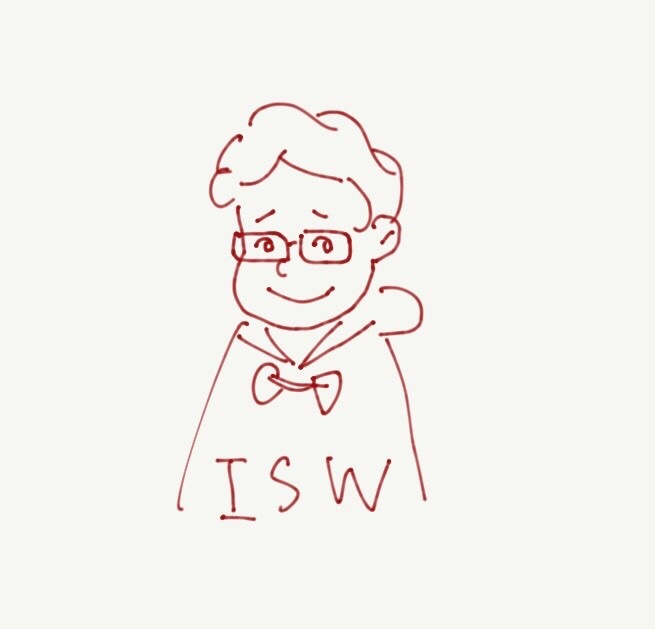

Portfolio about me

Kazuya Isawa
Self introduction
- 2017 東京工業大学第7類 入学
- 2018 東京工業大学情報理工学院情報工学系 所属
- 2020 東京工業大学情報理工学院情報工学系秋山研究室 所属
情報工学を学ぶ大学生です。バイオインフォマティクスに興味があります。
My Communities
- Tokyo Tech Photo Club(Club president 2018/10~2019/10)
- Peer Supporter(President 2019/5~)
- iGEM Tokyo Tech 2018 & 2019
- Tokyo-Tech AYSEAS 2018(Tokyo Tech-Asia Young Scientist and Engineer Advanced Study Program) in Vietnam